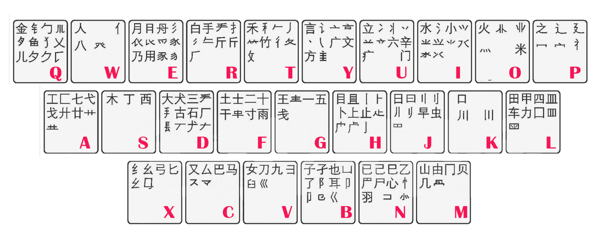

Compared with using computer to code Chinese characters, using DNA needs to solve the following problems:
It is the existence of these problems that makes our coding of Chinese characters long and tortuous.
Convert of Gb code into nucleotide sequences.
NO! Such code merely gives different Chinese characters different binary Numbers, meaningless, losts the vitality of Chinese characters.
Take the Chinese character as a picture and make it into a grid. Record whether there are Chinese character strokes in different positions in each square.
NO! The writing of Chinese characters is complex and requires too many nucleotide sequences to record information.
Build a huge space coordinate system, where each character takes up a position and records the position.
NO! The number of Chinese characters is too large. Nucleotide sequences can be too long when there is a lot of information required.
Use phonetic coding. The pronunciation of each Chinese character is simple, and the pronunciation can be determined by the specific initials + finals. The initials and finals can be respectively corresponded to specific nucleotide sequences, and the two can combine to obtain the nucleotide sequences of Chinese characters.
NO! There may be several or hundreds of Chinese characters with the same pronunciation, and it is hard to determine how many nucleotides are needed for different characters with the same pronunciation. There are many kinds of initials and finals, which also make the corresponding sequence of Chinese characters longer, resulting in the waste of bases.
Use Chinese pronunciation + structure. The initials of Chinese characters and part of the writing features of Chinese characters are used to distinguish different Chinese characters.
NO!After calculation, 8 nucleotides were not enough to distinguish the pronunciation and writing features of Chinese characters.
Use the order of the characters. Different Chinese characters can be sorted according to the complexity of writing, which can correspond to nucleotide sequences.
NO!This coding rule is not conducive to the expansion of Chinese characters. When new Chinese characters need to be stored, the order of all Chinese characters will change, and the nucleotide sequence will also change.
After a series of attempts, we thought of using Wubi input method to encode Chinese characters.
Wubi font is coded according to the strokes and font characteristics of Chinese characters, is a typical form shape code input method. Wubi input method puts forward the concept of "etymon". All Chinese characters can be represented by one to four etymons. "Wubi input method" distributes Chinese character etymons on the keyboard (as shown in the figure below). Each key is called a Wubi code, and Chinese characters can be represented by up to 4-bit Wubi code.

Figure 1. Wubi input method keyboard
Redistribute the etymons, randomly combine the original 25 types of Wubi codes into 12 groups, and used two nucleotides to represent 12 groups of Wubi codes respectively. The characters’ 4-bit Wubi code is converted into an 8-bit nucleotide sequence.
NO!After combining the Wubi code, the two Chinese characters that have only one Wubi code is different have the same nucleotide sequence. Multiple Chinese characters correspond to the same nucleotide sequences, and the GC content of some corresponding DNA sequences is too high.
Count the use frequency of 25 typesof Wubi codes, and combine them into 12 groups according to the use frequency.
NO!There are still many Chinese characters corresponding to the same nucleotide sequence. And the GC content of some corresponding DNA sequences is also too high.
Redistribute the etymons, randomly combine the original 25 types of Wubi codes into 10 groups, and use two nucleotides to represent 10 groups of Wubi codes respectively (GC,CG did not have Wubi code corresponding to them). The characters' 4-bit Wubi code is converted into an 8-bit nucleotide sequence. If the two characters correspond to the same nucleotide sequence, GC is used to replace two nucleotides in the sequence.
NO!This did not greatly improve the problem of multiple Chinese characters corresponding to the same nucleotide sequences, and the problem of the too high GC content.
Count the frequency of each Wubi code of Chinese characters, and design the grouping method for each Wubi code of Chinese characters.
NO!The problems above remain unresolved.
Take the 2-3 bits of Chinese Wubi code as a unit, and count the frequency of its different combinations. Take 2-3 bits corresponding to 4 nucleotide sequences, then recode Chinese characters.
NO!The problems remain.
The plan you can see in our wiki.